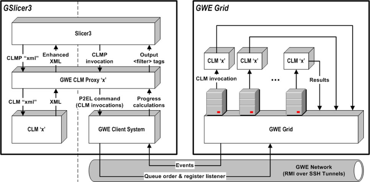

From the Slicer Project Site
:
3D Slicer is a multi-platform, free open source software (FOSS) for visualization and image computing.
Installation Guide
You may choose to install a pre-bundled "GWE Powered" distribution of Slicer3
or upgrade a current distribution of Slicer3 with GWE Features
.
Installing
a "GWE Powered" distribution
- Download one of the "GWE Powered" Slicer (GSlicer3
) distribution bundles:
| Products Merged
|
Link
|
| GWE 0.7.3.alpha + Slicer 3.3-alpha-2009-03-01 for darwin PPC |
GSlicer3-3.3-alpha-2009-03-01-darwin-ppc-0.7.3.alpha.tar.gz
|
| GWE 0.7.3.alpha + Slicer 3.3-alpha-2009-03-01 for darwin x86 |
GSlicer3-3.3-alpha-2009-03-01-darwin-x86-0.7.3.alpha.tar.gz
|
| GWE 0.7.3.alpha + Slicer 3.3-alpha-2009-03-01 for linux x86 |
GSlicer3-3.3-alpha-2009-03-01-linux-x86-0.7.3.alpha.tar.gz
|
| GWE 0.7.3.alpha + Slicer 3.3-alpha-2009-03-01 for linux x86 64 bits |
GSlicer3-3.3-alpha-2009-03-01-linux-x86_64-0.7.3.alpha.tar.gz
|
- Extract the distribution archive to the directory you wish to install it. These instructions assume you chose "/usr/local/slicer"
. The directory GSlicer3-3.3-alpha-2009-03-01-[PLATFORM]
will be created from the archive.
- In a command terminal, add the SLICER_HOME
environment variable to point to the directory where the GSlicer3 distribution has just been extracted e.g. "export SLICER_HOME=/usr/local/slicer/Slicer3-3.3-alpha-2009-03-01-[PLATFORM]"
.
- Make sure that JAVA_HOME
is set to the location of your JDK, e.g. "export JAVA_HOME=/usr/java/jdk1.5.0_02"
and that "$JAVA_HOME/bin"
is in your PATH
environment variable.
- Configure the GWE portion of the merged product as described in the 'Configuration Guide'
. The GWE portion ($GWE_HOME
) can be found under $SLICER_HOME/gwe-0.7.3.alpha
.
- Install the latest release of GWE as described in the 'Installation Guide'
.
- In a command terminal, add the SLICER_HOME
environment variable to point to the Slicer installation to be upgraded, e.g. "export SLICER_HOME=/usr/local/slicer/Slicer3-3.0.2008-02-14-darwin-x86"
.
- Run "gwe-util-slicer-integration.sh"
. This will run an analysis of the Slicer installation to be upgraded and create all the appropriate CLM proxys.
- Configure the GWE portion of the upgraded Slicer as described in the 'Configuration Guide'
. The GWE portion ($GWE_HOME
) can be found under $SLICER_HOME/gwe-0.7.3.alpha
.
Usage Guide
After launching Slicer as usual (invoking Slicer3 executable from an X11 terminal) inspect the modules menu. There you will find all the typical Slicer modules along with their respective dynamic 'GWE Powered Proxys'
modules.
Each one of those proxy modules is a Slicer module which first will capture:
- Grid computing related information. This information is composed of:
| Field
|
Description
|
| Cluster
|
The cluster where the Slicer modules should process permutations in parallel, as a radio button choice. |
| Iteration Variables
|
Global P2EL value space variables
. |
- Values for the parameters of the proxied module. These values can be the same as the expected by the particular module or, alternatively, P2EL function invocations
. These expressions are semantic constructs to express value sets or runtime grid contextual values and are used to instruct GWE how to create a a set of value spaces to apply to the desired Slicer module. These expressions can also include references to global variables declared in the Iteration Variables
field. Please refer to the P2EL guide
for details on how to use and construct the particular expressions.
Once all this information is entered and the user clicks the Apply
button, GWE will execute in parallel this set of invocations, on the cluster selected in the Cluster
field and using the Slicer installation located under Slicer Location
on such cluster.
All GWE configuration will be read at runtime by Slicer3 and that's how the proxy modules are able to resolve the cluster options to provide in the Slicer UI and the authentication information to use to connect to the cluster; but doing such configuration from within Slicer is not available as of right now, so you have to do that before launching Slicer (as required in the 'Installation Guide' section).
Integration Technical Details
The process of upgrading Slicer3 to GSlicer3 or creating a GSlicer3 bundle carries on the following two tasks:
- Inspects the plugins of the given Slicer3 distribution and for each of those complying with the Standard Execution Model
specification, it creates a special type of CLM which will be referenced as GWE CLM Proxy
(GWE CLMP) from this point forward.
- Takes the Slicer3 distribution, the GWE CLM Proxys just created and the given GWE distribution and bundle them together.
GWE CLM Proxys (CLMP) are CLMs which will proxy into another (proxied CLM) to provide a generalized GWE powered version of the proxied CLM. CLMPs are intelligent agents, which at runtime will:
- Add and modify XML tags to the proxied CLM's XML descriptor to add GWE support.
- Generate GWE order templates which will be transformed into actual proxied CLM invocations.
- Localize the CLM invocations of the GWE order to be executed on the cluster selected by the user.
- Install a customized Slicer result parser to the GWE order.
- Submit the GWE order created to the remote selected cluster, over the secured RPC GWE network.
- Monitor, in real time, the execution progress of the localized proxied CLM invocations (from the GWE order) on the selected cluster. This real time monitoring is also performed over the secured RPC GWE network.
- Keep track of the CLMP progress as a ratio of the number of proxied CLMs invocations already executed divided by the total amount of proxied CLMs invocations associated with the GWE order submitted.
- Notify Slicer3 of this progress using Slicer3 XML based progress API (<filter-XXX
> tags sent to the standard output of the CLMP).

This integration effort will also provide an additional framework to easily build specialized GWE powered CLMs. This framework includes:
- Automatic generation and parsing of XML descriptor into a programmatic model.
- Libraries to access filtering information.
- Straight forward access to GWE Grid through the secured RPC GWE network.